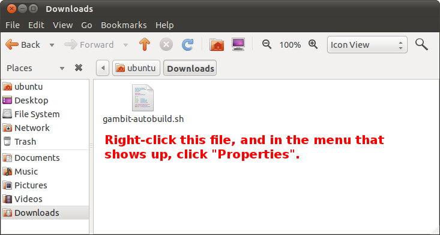
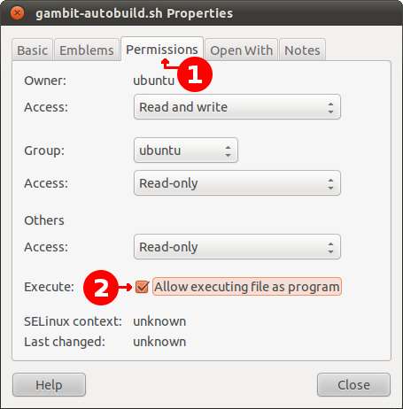
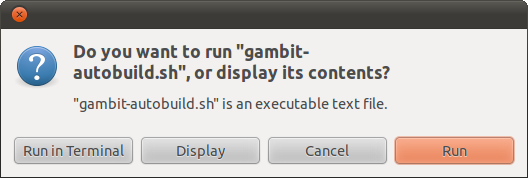

This guide will explain how to automatically get Gambit ready for use on your Unix-like operating system. After a few simple manual steps, the majority of the work will be carried out by a script. This includes automatically installing the required software for building Gambit, downloading the Gambit source code (it will be placed in the same directory as the script), and building the source code (this produces the executable software).
Note: if the images below don't exactly match how things look on your system, don't worry, your system should not differ much.
First, you'll have to download the gambit-autobuild.sh script, and save it in a location that you can easily find using the File Manager.
Next, you have to mark the script as being executable:


And lastly, you have to execute the script, and follow the instructions on the screen:
